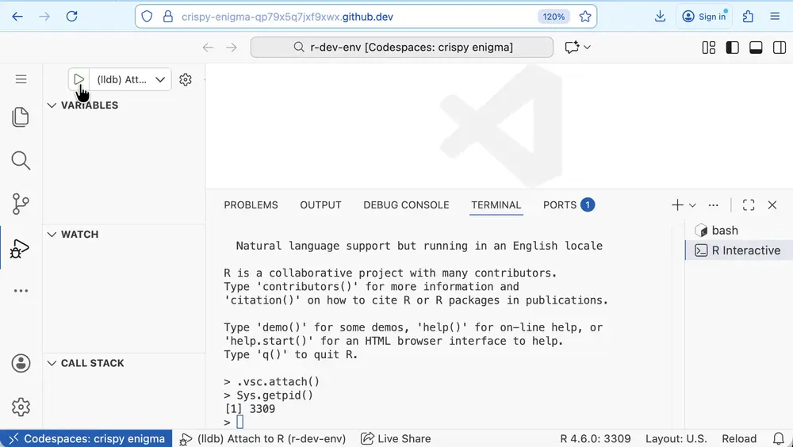
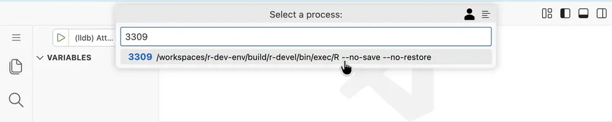
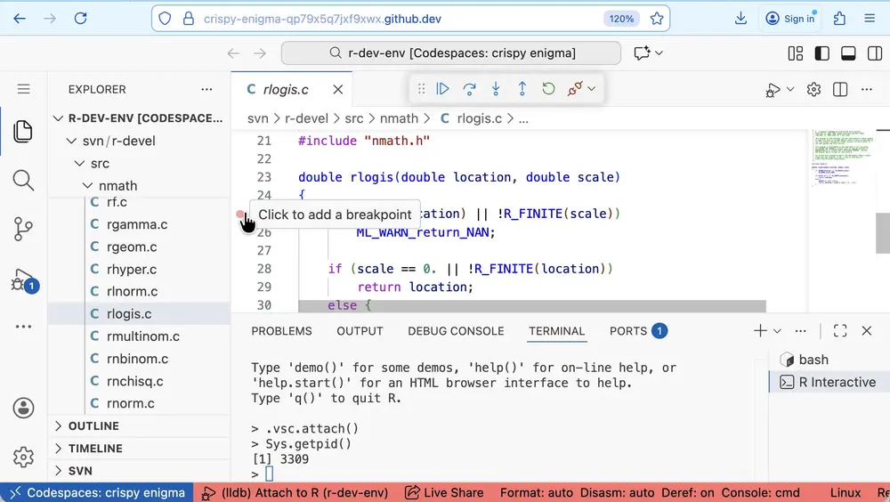
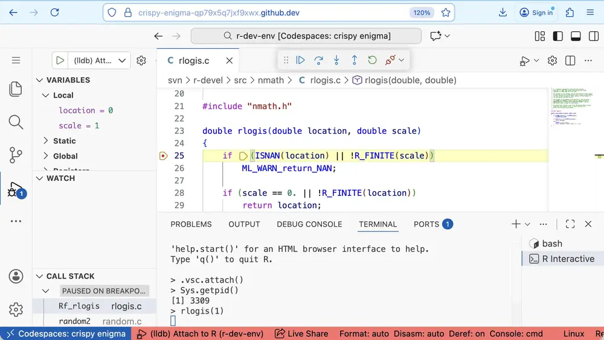
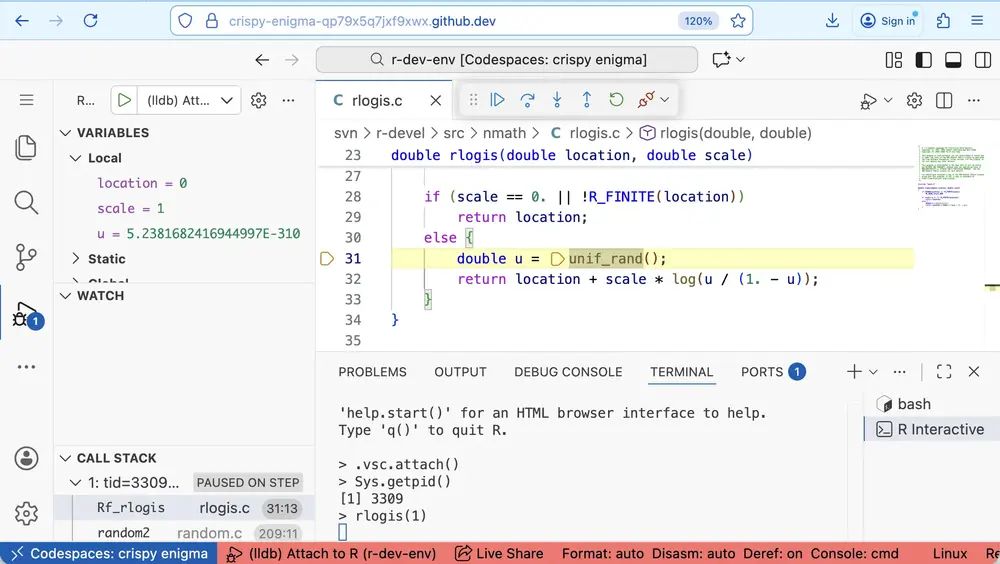
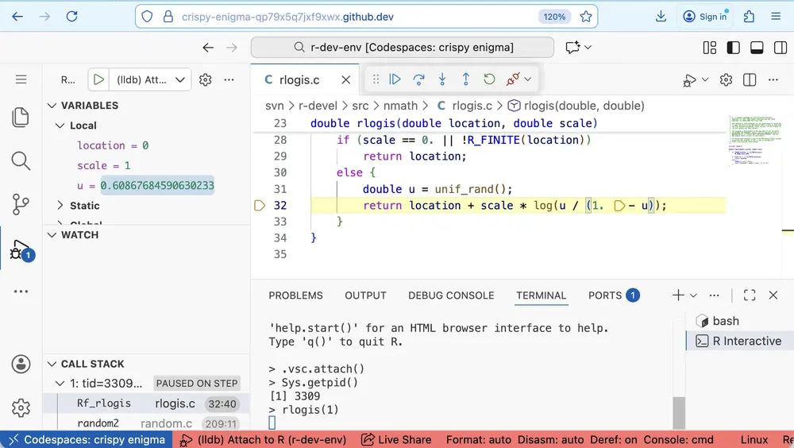
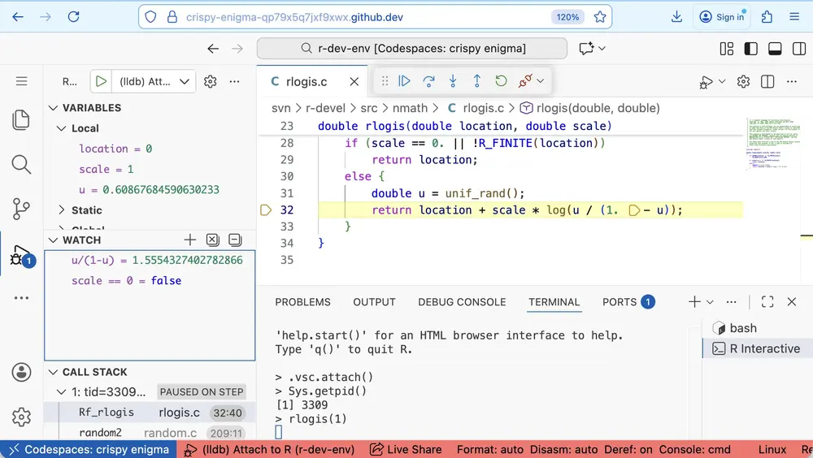
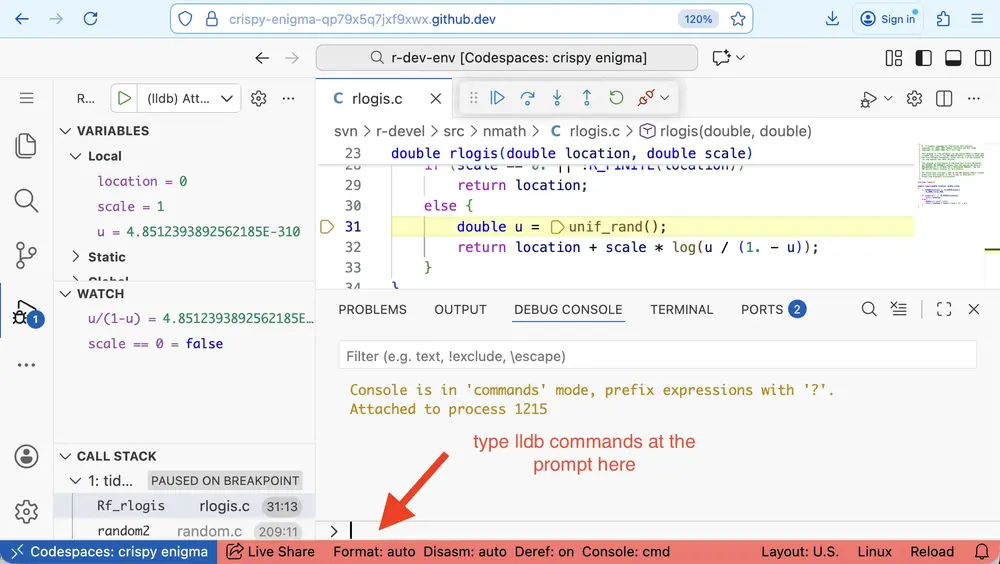

Debugging C with LLDB
This tutorial introduces debugging C code with LLDB (the Low-Level Debugger) via VS Code's Run and Debug functionality. It is also possible to use lldb via the command line using bash terminals in the R Dev Container.
1. Open an R Terminal Running R Built from Source
If necessary, run which_r to switch to a version of R you have built
following the Building R tutorial.1
Then open an R terminal by clicking on R: (not attached) in the status bar,
or running R: Create R terminal from the VS Code command palette.
2. Attach LLDB to the Running R Process
Find the process ID (PID) of your R session, by calling Sys.getpid() in R:
The PID is also shown after the R version number in the status bar (you may need to deselect some of the statuses shown to see the status for R).
Open the "Run and Debug" sidebar and click the green arrow next to the drop-down box at the top.

This will open a dialog for you to enter the PID:

When you enter the PID the corresponding process is shown underneath - click on it to select that process for LLDB to attach to.
3. Set a Breakpoint in C Code
For example, to debug the rlogis C function, open
$TOP_SRCDIR/src/nmath/rlogis.c and set a breakpoint by clicking to the left
of the line number corresponding to the first line in the body of the function:

4. Trigger the Debugger
In the R terminal, run the rlogis() command, which calls the rlogis C
function:
This will trigger the LLDB debugger and pause at the line where the breakpoint was added:

5. Using the Debugger Toolbar
After pausing at a breakpoint, use the LLDB toolbar buttons and commands to control execution:
- Continue/Pause (▷ in blue, or F5): Resume running until the next breakpoint or the end of the call from R. This changes to a pause button (⏸ in blue) when the code is running, allowing you to pause execution.
- Step Over (↷ in blue, or F10): Run the current line of code and stop at the next line.
- Step Into (↓ in blue, or F11): Run the current line of code and step into the next function called to start debugging the code in that function.
- Step Out (↑ in blue, or Shift+F11): Run the remainder of the current function and stop at the point where the function was called. This will step out through several internal C functions in the call stack - use Continue instead to finish and return to R.
- Restart (⟲ in green, or Cmd/Ctrl+Shift+F5): Start again from the beginning.
- Disconnect (🔌 in red, or Shift+F5): Detach the debugger but keep R running.
- Stop (access from more controls): Teminate the debugging session and the R process (closes the R terminal).
6. Inspect Variables and Expressions
The Variables sub-panel of the Run and Debug side panel shows the current value
of variables in the current environment. This is particularly helpful for
local variables defined in the function, e.g. before u is defined:

and after

In the Watch sub-panel we can define expressions to watch as we step through
the code. For example, we might watch u / (1 - u) and scale == 0:

Note these expressions can only use simple operations, for example, we can't
watch log (u / (1 - u)) as this uses the log function.
The watch panel can also be used to dereference pointers (e.g. *ptr) or
access elements of an array (e.g. array[5]).
7. Using the Debug Console
Using the Debug Console, we can interact with LLDB via the command line, enabling more advanced debugging.

Stepping through the code
These commands are equivalent to the debug toolbar buttons
ccontinuennext (Step Over)sstep into
Navigating the call stack
These commands are equivalent to selecting function names in the Call Stack sub-panel of the Run and Debug panel.
upshows the next level up in the call stack (also,down)
Setting breakpoints
break set -n FUNC_NAMEto set a breakpoint at the start of the function, e.g.break set -n C_plotXYto set a breakpoint inC_plotXYbreak set -n Rf_logisto set a breakpoint inrlogis2break set -l 31sets a breakpoint at line 31 of the current filebreakpoint deletedeletes all breakpoints
Values, expressions and calls
print xprints x, wherexis a simple expression with the same restrictions as for the Watch sub-panelexpr xevaluates C expressionx. For example- Modify the value of objects:
expr u = 0.2 - Call functions, defining the return type:
expr (double) log(u / (1 - u)) -
call FUNC_NAME()runs a C function in the debugger. We can use this to run C functions defined in R2, e.g.Note the second call asks R to print the value of x, so the output will appear in the R terminal, not the debug console. This can be useful for printing
SEXPobjects.
-
Debugging C code requires R to have been built with
CFLAGS="-g -O0". This will not be the case for binary installs (such as the version of R pre-installed in the container) or R built following the Building R tutorial for R Dev Container ≤ v0.3. ↩ -
C function names in R are internally prefixed (usually with
Rf_orR_) to avoid name collisions. If the name in the function definition does not have a prefix, this means a header file maps the unprefixed name to a prefixed name. Search the R sources for#define FUNC_NAMEto find the mapping, e.g.#define rlogis Rf_logisin$TOP_SRCDIR/src/include/Rmath.h0.intells us we must useRf_logisas the function name in lldb commands likebreak set -nandcall. ↩↩